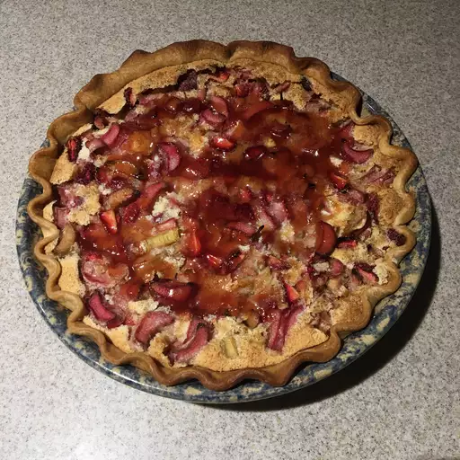

Strawberry-Rhubarb-Custard Pie

Description
It's a pie. In case you've already forgotten what flavour, see the title.
Good choice for anyone with too much rhubarb on their person.
Ingredients
- 1 (9 inch) unbaked pie crust
- 3 cups rhubarb, sliced 1/4-inch thick
- 1 cup fresh strawberries, quartered
- 3 large eggs
- 1 cup white sugar
- 3 tablespoons milk
- 3 tablespoons all-purpose flour
- ¼ teaspoon freshly grated nutmeg
- 1 tablespoon butter, diced
- 2 tablespoons strawberry jam
- ¼ teaspoon water
Steps
- Preheat the oven to 350 degrees F (175 degrees C). Place rolled-out pie crust in a 9-inch pie plate and set on a baking sheet lined with parchment paper or a silicone baking mat.
- Combine rhubarb and strawberries in a bowl; transfer to the pie crust, distributing evenly.
- Whisk eggs, sugar, milk, flour, and nutmeg together in a medium bowl. Slowly pour filling over rhubarb mixture until it just reaches the top edge of the crust. Scatter diced butter evenly over the top of the filling. Lightly tap and shake the baking sheet to remove any air bubbles.
- Transfer pie to the preheated oven and bake, turning halfway through, until rhubarb is tender and custard is set, about 60-90 minutes.
- Mix strawberry jam and water in a small bowl; heat in the microwave until warm, about 15 seconds. Glaze the top of the pie with the jam mixture and let cool. Refrigerate until ready to serve.
Home